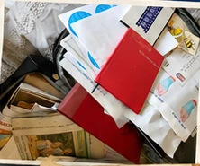

B.M. CREATIONS · TELEVISION FORMAT
What’s the Big Idea?
Inventors pitch their ideas to four judges. The winner leaves with a cash prize and specialist help to take the idea further.
Original television entertainment format
Created by Brian Mountford
B.M. CREATIONS · TELEVISION FORMAT
Who brings the ideas?
Members of the public and inventors bring their own original ideas or inventions.
The pitch
Each inventor explains the problem, shows how the idea addresses it and answers questions from the panel.
The demonstration
A prototype, model or clear illustration can help viewers understand how the idea works.
Demonstration materials are a proposal for the pilot.
B.M. CREATIONS · TELEVISION FORMAT
Four judges, four questions
Practicality
Can it be made? Does it solve a real problem?
Design
Is it well thought out, usable and built to last?
Commercial potential
Could it succeed in the market? Is there a viable business case?
Public appeal
Would people want to use it? What difference would it make to them?
The judges question, challenge and give constructive advice before scoring.
B.M. CREATIONS · TELEVISION FORMAT
How an episode plays
1. Pitch and questions
The inventor presents the idea and the four judges put it to the test with questions.
2. Score and reveal
The panel scores the ideas against the four criteria. The highest total wins the heat.
| Practicality | Design | Commercial | Appeal | Total |
|---|
| 9 | 8 | 9 | 8 | 34 |
Illustrative scoreboard. The scale and tie-break can be agreed during development.
3. Award and advance
The winner receives cash and relevant specialist help, then progresses to a future semi-final.
B.M. CREATIONS · TELEVISION FORMAT
What happens after the win?
The prize helps the inventor take the next step.
Support matched to the idea
The original format calls for relevant specialist help. For the pilot, that could mean a session with a product designer, a prototype workshop or a market-testing adviser.
A reason to come back
Heat winners progress to a semi-final. A proposed follow-up would show viewers what their specialist session helped them achieve.
B.M. CREATIONS · TELEVISION FORMAT
The pilot and the archive
Proposed pilot
Cast inventors with contrasting ideas, assemble the four judges, and film one complete heat from the first pitch to the winner reveal. Confirm the scoring scale, prize and specialist support before filming.
From Brian Mountford’s archive
The concept was rediscovered among papers in a suitcase stored in the loft in 2013. The collection contains material dating back to 1979 and possibly earlier.

Brian Mountford · Creator
brianmountford@btinternet.com